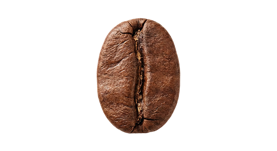
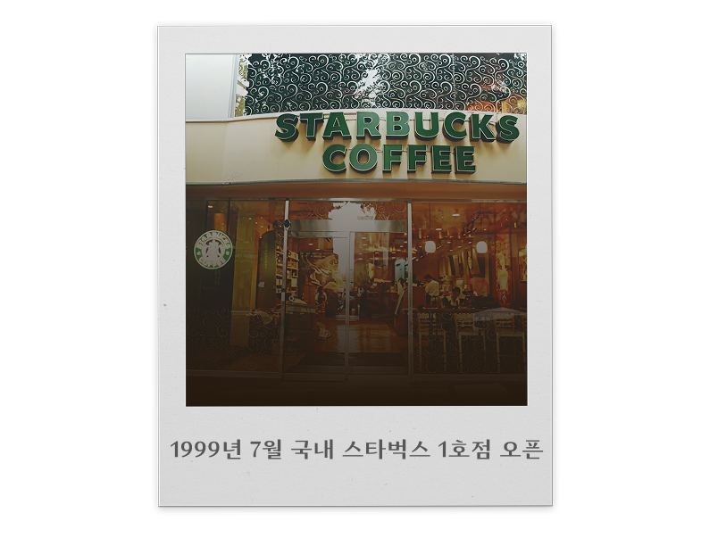
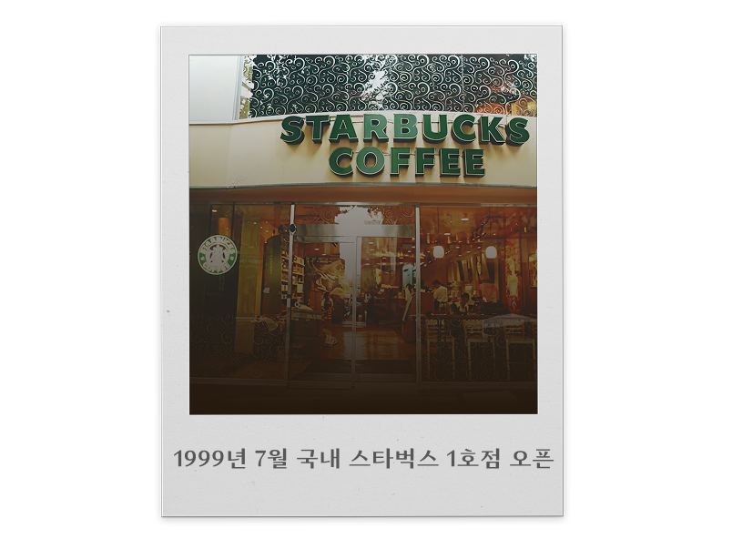

언제
어떻게
우리의 일상이 된 걸까?
지금부터 커피의 여정을 따라가봐요


원인을 조사하던 중
칼디는 염소들이 먹은 한 나무의 빨간 열매가 원인이라는 것을 알게되었고,
그 열매를 먹어보게 되었어요.
그 열매를 먹은 칼디는 염소들과 함께 춤을 추고 즐거워했다고 하죠.
이때 처음으로 커피가 각성의 음료로 발견된 거에요.
이후 한 수도사가 길을 지나다 칼디와 춤추는 염소들을 보고
칼디에게 다가가 그 열매에 대한 설명을 듣게 되었고,
이 열매가 자신의 기도에 대한 응답이라고 생각했어요!
이 수도사는 기도 중에 자주 졸았는데, 이 열매를 먹으면 졸지 않고
기도에 집중할 수 있을 것이라고 믿게 되었어요.
이후 그 수도사는 다른 수도사들에게도 이 커피 열매를 알려주었지만
다른 수도사들은 처음에 커피를 악마의 것이라 여겨 불태웠다고 해요.
하지만 불타는 열매에서 나는 향기가 너무 매혹적이어서
그들은 열매를 꺼내 갈아 물에 타마셨고
이게 현재의 커피가 되었다고 합니다.
1615년 커피가 이탈리아에 전해지기 전까지
커피는 주로 이슬람 사람들이 마시던 음료였어요.
이슬람 세력을 통해 전해지다 보니,
기독교권인 유럽에서는 커피를 이교도들이 마시는 음료로 인식했고,
악마의 유혹, 야만인의 음료, 사악한 나무의 검은 썩은 물이라 부르며 경계했어요.
(하지만 한번 커피의 맛을 본 사람들은 계속해서 빠져들었다고 하죠.)
교황 클레멘스 8세 또한
주변인들로부터 커피를 공식적으로 금지해달라는 압력을 받았고,
신자들의 합리적 요청에 따라 교황청에서 결국
공개적인 커피나무 화형식을 거행하게 되었어요
하지만 이게 웬걸?
커피나무가 불에 타들어갈 때마다 로스팅되는 커피 열매의 향이 너무 좋아
반대하던 사람들마저 모두 매료되었죠.
결국 교황 클레멘스 8세는 직접 커피를 맛본 뒤에
“이 사탄의 음료는 왜 이렇게 맛이 좋은가?
커피는 이교도 놈들만 마시도록 놔두기엔 너무나도 아깝도다”
라고 하며 커피를 축복해 공식적으로 마실 수 있도록 승인했다고 해요.

이렇게 맛있는 커피는 세계로 널리 널리 퍼져
우리나라에 가배(珈琲)라는 이름으로 들어오게 되었어요.
개화기 무역이나 선교 등 다양한 목적으로 방문한
서양인들이 한국에 커피를 들여왔고,
초기에는 상류층만 즐기던 고급 기호식품이었어요.
대표적인 예로 고종 황제도 커피를 매우 즐겨 마셨다고 전해지죠.

우리나라의 커피문화는 해방과 한국전쟁을 겪으며
점차 대중화 되었어요. 한국전쟁 이후 미군의 전투식량 안에
들어있던 커피가 일명 ‘양키시장’을 통해
시중에 나오며 서민에게도 파고들게 되었죠.
서울 도심에 간간이 있던 다방은
6-70년대에 급격히 성장했는데, 해방 당시
60여개에 불과했던 다방은
1960년에는 1,000개를 넘겼고
1970년에는 3,000개에 가까울 정도로 성장했어요.


같은 시기 동서식품에서 출시한 인스턴트 커피는
1990년대 말 외환위기를 겪으며 폭발적으로 성장했어요.
외환위기 당시 대부분의 회사가 구조조정을 겪으며 커피는 본인이 타마시게 되고,
식당 등의 업소에서는 서비스로 커피를 무료로 제공하며
간편한 믹스커피의 소비가 크게 증가했죠.
 

시대가 변화하고 기술이 발전하며 캡슐 커피,
로봇 바리스타와 AI 추출 시스템과 같이 기술과 결합한
새로운 형태의 커피로 변모하며
커피는 바쁜 현대인의 일상 속에서 더욱 가까운 존재가 되었어요
이렇게 오랜 시간동안 전설과 종교, 산업과 기술을 거쳐
커피는 우리에게 가장 익숙한 음료가 되었습니다.
앞으로의 커피는 어떤 모습일까요?
인공지능이 나의 기분에 맞춰 커피를 추천해주는 시대,
환경을 고려한 재활용 캡슐로 지속 가능한 지구를 향하는 시대,
커피는 여전히 진화 중입니다